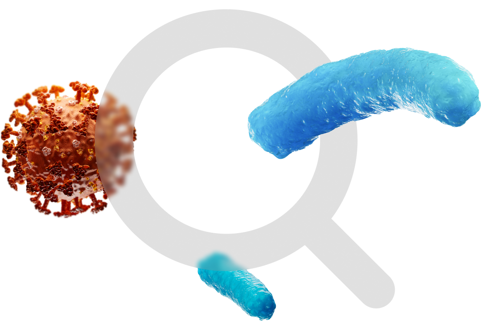

ПЕДИАТРИЯ
ЭКСПЕРТНЫХ РЕШЕНИЙ
За последние 6 месяцев объем использования антибиотиков вырос почти в 2 раза¹. Вместе с ним возрастает резистентность популяции к антимикробным препаратам, а также растет частота встречаемости антибиотик-ассоциированной диареи.
Как синбиотики помогают в решении данного вопроса?
Предлагаем чуть более углубиться в данную тему.
Широкое использование антибиотиков приводит к развитию различных механизмов устойчивости к ним. Одним из них является способность к образованию биопленок, которые зачастую приводят к хроническому течению многих заболеваний.
Микробные биопленки — это сообщества, образованные микроорганизмами, клетки которых имеют специализацию, контактируют между собой, вырабатывают межклеточное вещество, ограничены от внешней среды дополнительными оболочками5.
Бактериальные биопленки имеют существенное значение в клинической медицине
Инфекционных заболеваний протекает с образованием биопленок²³.
Уже существует более 8000 научных публикаций о биопленках возрослого.
Микроорганизмы в составе биопленок увеличивают свою устойчивость к антибиотикам до 10 000 раз, поэтому исследователи рассматривают пробиотики как возможный механизм, препятствующий образованию биопленок4.
Исследование по Максилак® Бэби
Синбиотики как средство борьбы против формирующихся и зрелых биопленок патогенных микроорганизмов. Инфекционные болезни. 2022г.

В ходе исследования было обнаружено, что штаммы входящие в Максилак® Бэби5:
подавляют формирование биопленок 83% тест-штаммов
подавляют 50% зрелых биопленок грам + бактерий-стафилококков
подавляют 20% грам-бактерий — E. coli и K. pneumoniae.
Полученные данные указывают на возможность успешного использования
препарата «Максилак® Бэби» для профилактики инфекционных заболеваний, связанных с образованием биопленок патогенных
микроорганизмов5.
Антибиотик-ассоциированная диарея
это три или более эпизодов жидкого, водянистого стула за 24 часа, которые возникают на фоне антибактериальной терапии или в течение 2 месяцев после окончания курса при отсутствии других причин.
Характеристика стула
Учащение стула более 3 раз в сутки
Появление патологических примесей в виде слизи, зелени и крови
Частота встречаемости антибиотик-ассоциированной диареи
Максилак® Бэби
первая линия профилактики антибиотик ассоциированной диареи
Способствует повышению эффективности антибактериальной терапии за счет подавления формирования биопленок патогенных микроорганизмов8
Профилактика дисбиоза кишечника уже с 1-го дня антибактериальной терапии8
Содержит штаммы устойчивы к часто назначемым антибиотикам9,10
Источники:
- Данные AlphaRM, продажи в упаковка июль-декабрь 2022 /январь-июнь 2022, МНН: азитромицин, амоксициллин, амоксициллин + клавулановая кислота, ампициллин, доксициклин, кларитромицин, левофлоксацин, линкомицин, норфлоксацин, офлоксацин, тинидазол + ципрофлоксацин, ципрофлоксацин, хлорамфеникол.
- Тец В.В., Тец Г.В. Микробные биоплёнки и проблемы антибиотикотерапии.Атмосфера. Пульмонология и аллергология. 2013; 4:60-64.
- Wang G, Zhao G, Chao X, Xie L, Wang H. The Characteristic of Virulence, Biofilm and Antibiotic Resistance of Klebsiella pneumoniae. Int J Environ Res Public.
- Carvalho FM, Teixeira-Santos R, Mergulhão FJM, Gomes LC. The Use of Probiotics to Fight Biofilms in Medical Devices: A Systematic Review and Meta-Analysis. Microorganisms. 2020 Dec 23;9(1):27.
- Слукин П.В., Кукес Е.А., Фурсова А.Д., Фурсова Н.К. Синбиотики как средство борьбы против формирующихся и зрелых биопленок патогенных микроорганизмов. Инфекционные болезни. 2022.
- Hickson M. Probiotics in the prevention of antibiotic-associated diarrhoea and Clostridium difficile infection. Therap Adv Gastroenterol. 2011.
- Хавкин Анатолий Ильич Антибиотик-ассоциированная диарея: возможности применения пробиотиков // Трудный пациент. 2018.
- Захаренко С.М., Андреева И.В., Стецюк О.У. Нежелательные лекарственные реакции со стороны ЖКТ и антибиотикоассоциированная диарея при применении антибиотиков в амбулаторной практике: профилактика и лечение // КМАХ. 2019.
- Максилак® Бэби саше СГР АМ.01.07.01.003.R.000079.09.19 от 5.09.2019.
- Место пробиотиков в современной клинической практике Е.Ю.Плотникова, Ю.В.Захарова ФГБОУ ВО «Кемеровский государственный медицинский университет» Минздрава России.
БИОЛОГИЧЕСКИ АКТИВНАЯ ДОБАВКА. НЕ ЯВЛЯЕТСЯ ЛЕКАРСТВОМ
M-M-MAK-2023_03-1054